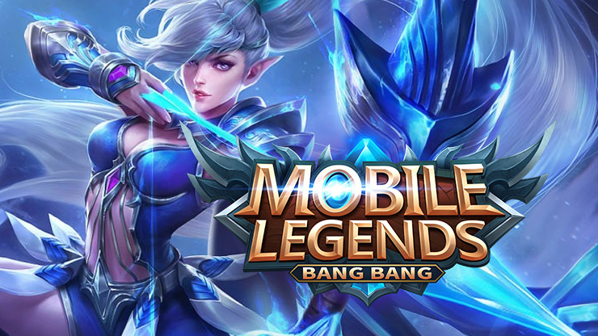
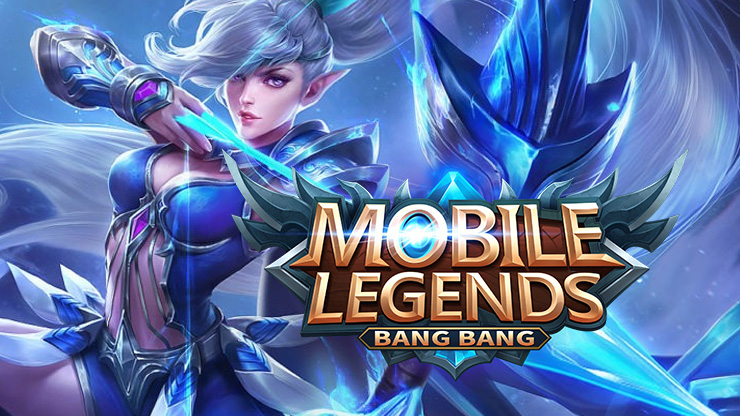

Об игре
Mobile Legends - это онлайн-мобильная игра с командными боями 5 на 5 для мобильных устройств. В игре представлено более 100 уникальных героев, каждый из которых обладает своими способностями и навыками. Игроки должны сотрудничать с командой, чтобы сразиться с противниками и уничтожить их базу. Игра предлагает различные режимы, включая быстрые матчи, ранговые и соревновательные сезоны. Она также поддерживает взаимодействие с другими игроками через онлайн-чат и социальные сети.
История создания
Mobile Legends была разработана и выпущена китайской компанией Moonton в 2016 году. Она была создана как мобильная MOBA игра, предназначенная для мобильных устройств.
Идея создания Mobile Legends возникла после популярности других MOBA игр, таких как League of Legends и Dota 2, и нехватки подобных игр на мобильных устройствах.
Команда разработчиков поставила перед собой цель создать удобную и доступную MOBA игру, которую можно было бы играть на мобильных устройствах в любое время и в любом месте.
Игра была выпущена на платформах Android и iOS и немедленно стала популярной, привлекая миллионы игроков со всего мира.
Mobile Legends получила международное признание и стала популярной в различных странах, особенно в юго-восточной Азии, где проводятся международные соревнования и матчи на высоком уровне. В 2019 году игра привлекла более 2 миллиардов активных игроков.
 
